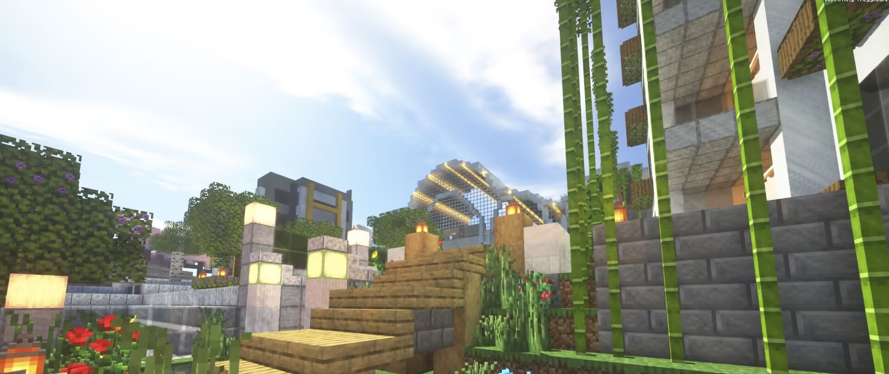
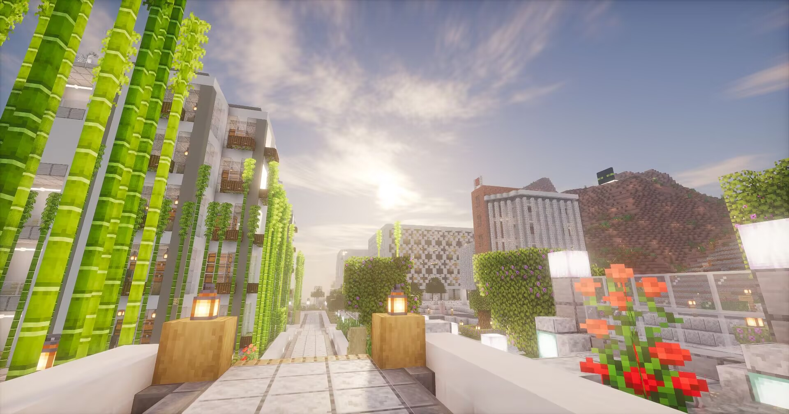
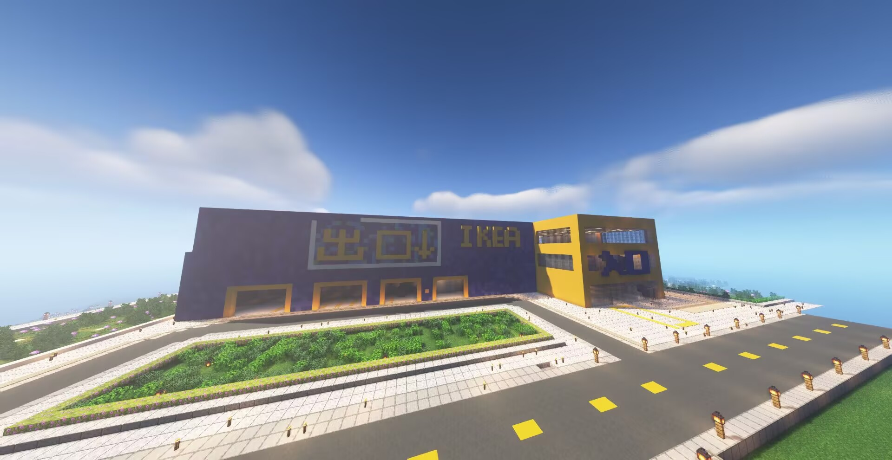
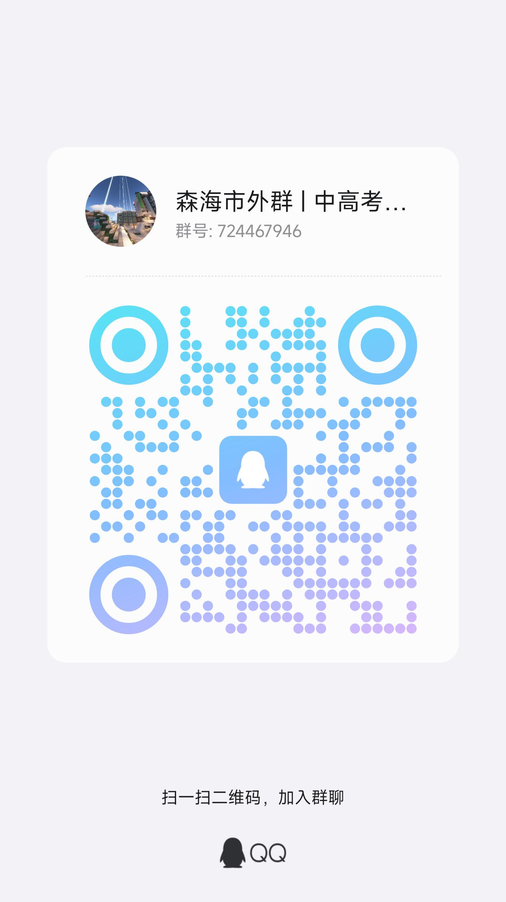

森海市
公会简述
森海市，其前身森口镇成立于2023年1月27日，至今已有两年多的历史。本组织以公共交通建设，机器建设，城市建设为核心，在服务器开展相关活动，在两年的历史中从未断代。本组织在服务器内部承担重要角色，尤其在交通建设，地区开发等方面。本组织也承担过多次服务器活动，如暑假活动，国庆活动，春节活动等。
公会Logo
公会Wiki
wiki地址:https://flowus.cn/senhai/share/84c17377-c3ee-4495-8e62-169645a2bf08?code=JK1WAC
公会成员
- _Moriguchi_(森口)
- 328_(神采)
- _XiaoJin_（小金）
森海的总设计师，前森口镇核心成员。脑子里特别有想法，但有点冲动。上线频率很高，老是喜欢建建筑和铁道。
啥都爱干的重要成员，前森口镇核心成员。热衷于参与组织讨论，也很有想法，也时时刻刻为着组织发展着想。著名住宅群--春风一品由他所建。
总管，前星海市核心成员。组织内的带哲学家，常常提出一些森口想不到的大道理，弥补了森口的局限性。在建筑和道路建设方面也颇有成就。
公会历史（简述）
从2023/01/27开始，经历四个周目，两个服务器，历史成员大概有几十位把。
每个周目各有特点，也有许多有意思的事情。
详细：https://flowus.cn/senhai/545f5a13-b2b8-4aeb-ada9-6ab3c27b34b0
发展规划
从bilicraft 18th开始的规划制度是一个组织特色，针对每个时间段，都会出一份规划。
详细：https://flowus.cn/senhai/8bb9e465-8b34-4730-8c47-006d491b3212
公会风景
   联系我们
地理位置:舒芙蕾 春风平原
q群:724467946
官方wiki地址:https://flowus.cn/senhai/share/84c17377-c3ee-4495-8e62-169645a2bf08?code=JK1WAC
